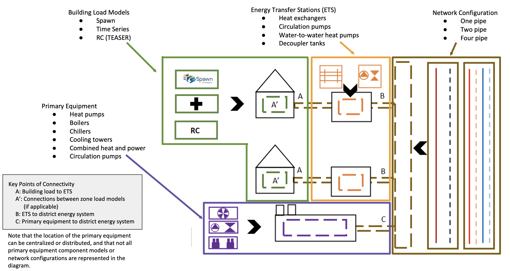

GeoJSON Modelica Translator Documentation¶

Description¶
The GeoJSON Modelica Translator (GMT) is a one-way trip from GeoJSON in combination with a well-defined instance of the system parameters schema to a Modelica project with multiple buildings loads, energy transfer stations, district system, and distribution network. The project will eventually allow multiple paths to build up different district heating and cooling system topolologies; however, the initial implementation is limited to 1GDH and 4GDC.
Getting Started¶
The GeoJSON Modelica Translator is in alpha-phase development and the functionality is limited. Currently, the proposed approach for getting started is outlined in this readme. Currently you need Python 3 and Pip 3 to install/build the packages. Python 2 is at end of life and should be avoided; however, Python 2 may still be needed to run the models with JModelica (this is actively being evaluated). Note that the best approach is to use Docker to run the Modelica models as this approach does not require Python 2.
Clone this repo into a working directory
(optional/as-needed) Add Python 3 to the environment variables
Install Docker for your platform
Configure Docker on your local desktop to have at least 4 GB Ram and 2 Cores. This is configured under the Docker Preferences.
Follow first 3 major bullets in Running Simulations section below.
Run
pip install -r requirements.txtTest if everything is installed correctly by running
py.test
The py.test tests should all pass assuming the libraries are installed correctly on your computer. Also, there will be a set of Modelica models that are created and persisted into the tests/output folder and the tests/model_connectors/output folder.
Developers¶
This project uses several dependencies that are under active development (e.g., modelica-builder, TEASER, etc). Since these are included as dependent project using git there may be a need to force an update from the dependent git repos. The best way to accomplish this is run the following command:
This project used pre-commit to ensure code consistency. To enable pre-commit, run the following from the command line.
pip install pre-commit
pre-commit install
Make sure to install modelica-fmt in order for pre-commit to run code cleanup on Modelica files. The latest prerelease or release is recommended. Once you download the package, place the modelicafmt binary into a folder that is in your path.
To run pre-commit against the files without calling git commit, then run the following. This is useful when cleaning up the repo before committing.
pre-commit run --all-files
GeoJSON¶
This module manages the connection to the GeoJSON file including any calculations that are needed. Calculations can include distance calculations, number of buildings, number of connections, etc.
The GeoJSON model should include checks for ensuring the accuracy of the area calculations, non-overlapping building areas and coordinates, and various others.
Load Model Connectors¶
The Model Connectors are libraries that are used to connect between the data that exist in the GeoJSON with a model-based engine for calculating loads (and potentially energy consumption). Examples includes, TEASER, Data-Driven Model (DDM), CSV, Spawn, etc.
Simulation Mapper Class / Translator¶
The Simulation Mapper Class can operate at mulitple levels:
The GeoJSON level – input: geojson, output: geojson+
The Load Model Connection – input: geojson+, output: multiple files related to building load models (spawn, rom, csv)
The Translation to Modelica – input: custom format, output: .mo (example inputs: geojson+, system design parameters). The translators are implicit to the load model connectors as each load model requires different paramters to calculate the loads.
In some cases, the Level 3 case (translation to Modelica) is a blackbox method (e.g. TEASER) which prevents a simulation mapper class from existing at that level.
Running Simulations¶
Currently simulations are runnable using JModelica (via Docker). In the future the plan is to enable a method that will automatically run the models without having to follow the steps below.
Clone https://github.com/lbl-srg/docker-ubuntu-jmodelica and follow the set up instructions
- Clone https://github.com/lbl-srg/modelica-buildings/
Move insde the modelica-buildings repo you just checked out
Pull the correct branch with:
git checkout issue1437_district_heating_cooling- Install git-lfs
Mac:
brew install git-lfs; git lfs installUbuntu:
sudo apt install git-lfs; git lfs install
Add the Buildings Library path to your MODELICAPATH environment variable (e.g., export MODELICAPATH=${MODELICAPATH}:$HOME/path/to/modelica-buildings).
- Example simulation:
jm_ipython.sh jmodelica.py spawn_two_building.Loads.B5a6b99ec37f4de7f94020090.buildingjm_ipython.sh jmodelica.py spawn_two_building/Loads/B5a6b99ec37f4de7f94020090/building.mo
Visualize the results by inspecting the resulting mat file using BuildingsPy.
%matplotlib inline import os import matplotlib.pyplot as plt from buildingspy.io.outputfile import Reader mat = Reader(os.path.join( "tests", "model_connectors", "output", "spawn_two_building_Loads_B5a6b99ec37f4de7f94020090_building_result.mat"), "dymola" ) # List off all the variables for var in mat.varNames(): print(var) (time1, zn_1_temp) = mat.values("znPerimeter_ZN_1.vol.T") (_time1, zn_4_temp) = mat.values("znPerimeter_ZN_4.vol.T") plt.style.use('seaborn-whitegrid') fig = plt.figure(figsize=(16, 8)) ax = fig.add_subplot(211) ax.plot(time1 / 3600, zn_1_temp - 273.15, 'r', label='$T_1$') ax.plot(time1 / 3600, zn_4_temp - 273.15, 'b', label='$T_4$') ax.set_xlabel('time [h]') ax.set_ylabel(r'temperature [$^\circ$C]') # Simulation is only for 168 hours? ax.set_xlim([0, 168]) ax.legend() ax.grid(True)
Managed Tasks¶
Updating Schemas¶
There is managed task to automatically pull updated GeoJSON schemas from the urbanopt-geojson-gem GitHub project. A developer can run this command by calling
./setup.py update_schemas
The developer should run the test suite after updating the schemas to ensure that nothing appears to have broken. Note that the tests do not cover all of the properties and should not be used as proof that everything works with the updated schemas.
Updating Licenses¶
To apply the copyright/license to all the files, run the following managed task
./setup.py update_licenses
Templating Diagram¶
Release Instructions¶
Bump version to <NEW_VERSION> in setup.py (use semantic versioning as much as possible).
Run autopep8 to nicely format the code (or run pre-commit –all-files).
Create a PR against develop into main.
After main branch passes, then merge and checkout the main branch. Build the distribution using the following code:
# Remove old dist packages
rm -rf dist/*
python setup.py sdist
Run git tag <NEW_VERSION>. (Note that python setup.py –version pulls from the latest tag.)
Verify that the files in the dist/* folder have the correct version (no dirty, no sha)
Run the following to release
pip install twine
twine upload dist/*
Build and release the documentation
# Build and verify with the following
python setup.py build_sphinx
# release using
./docs/publish_docs.sh
Push the tag to GitHub after everything is published to PyPi, then go to GitHub and add in the CHANGELOG.rst notes into the tagged release and officially release.
git push origin <NEW_VERSION>